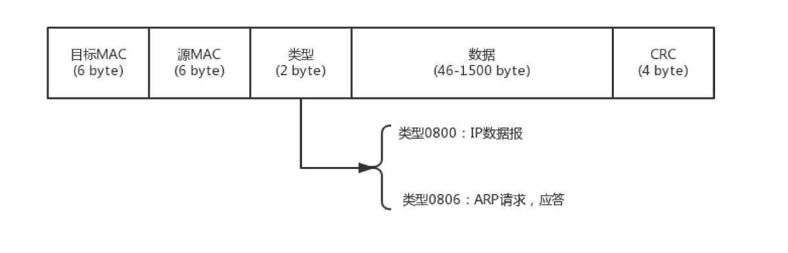
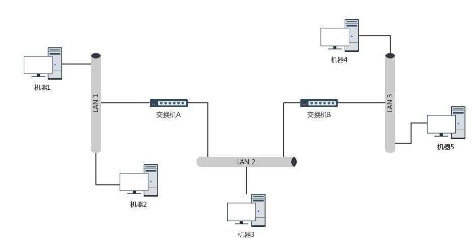
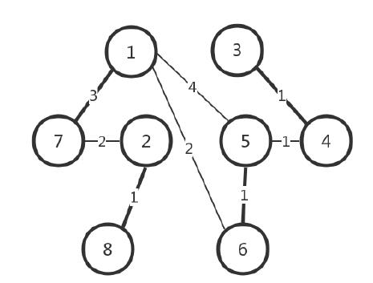
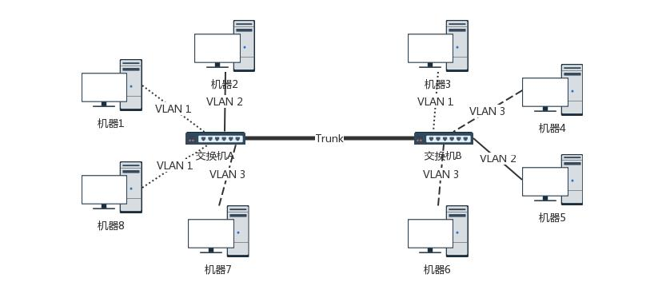

物理层和链路层
第一层（物理层）
大学宿舍里，宿舍两个人的电脑怎么连接起来？可以使用路由器，但是路由器是在第三层上。我们先从第一层物理层开始说。
电脑连电脑。这种方式就是一根网线，有两个头。一头插在一台电脑的网卡上，另一头插在另一台电脑的网卡上。还需要配置这两台电脑的 IP 地址、子
网掩码和默认网关。要想两台电脑能够通信，这三项必须配置成为一个网络，可以一个是 192.168.0.1/24，另一个是 192.168.0.2/24，否则是
不通的。构成了一个最小的局域网，也即LAN。
两台电脑之间的网络包，包含 MAC 层吗？当然包含，要完整。IP 层要封装了 MAC 层才能将包放入物理层。
怎么把三台电脑连在一起呢？
有一个叫作 Hub 的东西，也就是集线器。这种设备有多个口，可以将宿舍里的多台电脑连接起来。集线器没有大脑，它完全在物理层工作。它会
将自己收到的每一个字节，都复制到其他端口上去。这是第一层物理层联通的方案。
第二层（数据链路层）
Hub 采取的是广播的模式，如果每一台电脑发出的包，宿舍的每个电脑都能收到。这就需要解决几个问题：
- 这个包是发给谁的？谁应该接收？
- 大家都在发，会不会产生混乱？有没有谁先发、谁后发的规则？
- 如果发送的时候出现了错误，怎么办？
这几个问题都是第二层，数据链路层，也即 MAC 层要解决的问题。MAC 的全称是 Medium Access Control，即媒体访问控制。
第二个问题中的规则，学名叫多路访问。有很多算法可以解决：
- 方式一：分多个车道。每个车一个车道，你走你的，我走我的。这在计算机网络里叫作信道划分；
- 方式二：今天单号出行，明天双号出行，轮着来。这在计算机网络里叫作轮流协议；
- 方式三：不管三七二十一，有事儿先出门，发现特堵，就回去。错过高峰再出。我们叫作随机接入协议。著名的以太网，用的就是这个方式。
解决了第二个问题，就是解决了媒体接入控制的问题。
第一个问题：这里用到链路层地址，也被称为 MAC 地址。
第二层的网络包格式：

有了这个目标 MAC 地址，数据包在链路上广播，MAC 的网卡才能发现，这个包是给它的。MAC 的网卡把包收进来，然后打开 IP 包，发现 IP 地址
也是自己的，再打开 TCP 包，发现端口是自己，也就是 80，而 nginx 就是监听 80。
于是将请求提交给 nginx，nginx 返回一个网页。然后将网页需要发回请求的机器。然后层层封装，最后到 MAC 层。因为来的时候有源 MAC 地址，返
回的时候，源 MAC 就变成了目标 MAC，再返给请求的机器。
第三个问题：CRC，也就是循环冗余检测。通过 XOR 异或的算法，来计算整个包是否在发送的过程中出现了错误。
ARP 协议
当源机器知道目标机器的时候，可以将目标地址放入包里面，如果不知道呢？一个广播的网络里面接入了 N 台机器，我怎么知道每个 MAC 地址是谁呢？
这就是ARP 协议，也就是已知 IP 地址，求 MAC 地址的协议。
在一个局域网里面，当知道了 IP 地址，不知道 MAC 怎么办呢？靠“吼”。

为了避免每次都用 ARP 请求，机器本地也会进行 ARP 缓存。当然机器会不断地上线下线，IP 也可能会变，所以 ARP 的 MAC 地址缓存过一
段时间就会过期。
局域网
Hub 组网的方式，一旦机器数目增多，问题就出现了。因为 Hub 是广播的，不管某个接口是否需要，所有的 Bit 都会被发送出去，然后让主机来
判断是不是需要。这种方式路上的车少就没问题，车一多，产生冲突的概率就提高了。而且把不需要的包转发过去，纯属浪费。
这就需要二层设备，交换机。
因为每个口都只连接一台电脑，这台电脑又不怎么换 IP 和 MAC 地址，只要记住这台电脑的 MAC 地址，如果目标 MAC 地址不是这台电脑的，这个口
就不用转发了。交换机怎么知道每个口的电脑的 MAC 地址呢？这需要交换机会学习。
一台 MAC1 电脑将一个包发送给另一台 MAC2 电脑，当这个包到达交换机的时候，一开始交换机也不知道 MAC2 的电脑在哪个口，所以没办法，它只能
将包转发给出了来的那个口之外的其他所有的口。这个时候，交换机会记住 MAC1 是来自一个明确的口。以后有包的目的地址是 MAC1 的，直接发送到
这个口就可以了。
交换机作为一个关卡一样，过了一段时间之后，就有了整个网络的一个结构了，这个时候，基本上不用广播了，全部可以准确转发。当然，每个机器
的 IP 地址会变，所在的口也会变，因而交换机上的学习的结果，我们称为转发表，是有一个过期时间的。
交换机与 VLAN
拓扑结构是怎么形成的
常见到的办公室大多是一排排桌子，每个桌子都有网口，一排就有十几个网口，一个楼层就会有几十个甚至上百个网口。如果算上所有楼层，这个场景
自然比宿舍里的复杂多了。
这个时候，一个交换机肯定不够用，需要多台交换机，交换机之间连接起来，就形成一个稍微复杂的拓扑结构。
下图中，两台交换机连接着三个局域网，每个局域网上都有多台机器。如果机器 1 只知道机器 4 的 IP 地址，当它想要访问机器 4，把包发出去的时
候，它必须要知道机器 4 的 MAC 地址。

于是机器 1 发起广播，机器 2 收到这个广播，但是这不是找它的，所以没它什么事。交换机 A 一开始是不知道任何拓扑信息的，在它收到这个广播后，
采取的策略是，除了广播包来的方向外，它还要转发给其他所有的网口。于是机器 3 也收到广播信息了，但是这和它也没什么关系。当然，交换机 B 也是
能够收到广播信息的，但是这时候它也是不知道任何拓扑信息的，因而也是进行广播的策略，将包转发到局域网三。这个时候，机器 4 和机器 5 都收到
了广播信息。机器 4 主动响应说，这是找我的，这是我的 MAC 地址。于是一个 ARP 请求就成功完成了。
在上面的过程中，交换机 A 和交换机 B 都是能够学习到这样的信息：机器 1 是在左边这个网口的。当了解到这些拓扑信息之后，情况就好转起来。
当机器 2 要访问机器 1 的时候，机器 2 并不知道机器 1 的 MAC 地址，所以机器 2 会发起一个 ARP 请求。这个广播消息会到达机器 1 ，也同时
会到达交换机 A 。这个时候交换机 A 已经知道机器 1 是不可能在右边的网口的，所以这个广播信息就不会广播到局域网二和局域网三。
当机器 3 要访问机器 1 的时候，也需要发起一个广播的 ARP 请求。这个时候交换机 A 和交换机 B 都能够收到这个广播请求。交换机 A 当然知道
主机 A 是在左边这个网口的，所以会把广播消息转发到局域网一。
同时，交换机 B 收到这个广播消息之后，由于它知道机器 1 是不在右边这个网口的，所以不会将消息广播到局域网三。
如何解决常见的环路问题
当整个拓扑结构复杂了，这么多网线，绕过来绕过去，不可避免地会出现一些意料不到的情况。其中常见的问题就是环路问题。
下面途中，就出现了环路。

想象一下机器 1 访问机器 2 的过程。一开始，机器 1 并不知道机器 2 的 MAC 地址，所以它需要发起一个 ARP 的广播。广播到达机器 2，
机器 2 会把 MAC 地址返回来，看起来没有这两个交换机什么事情。
但是问题来了，这两个交换机还是都能够收到广播包的。交换机 A 一开始是不知道机器 2 在哪个局域网的，所以它会把广播消息放到局域网二，在局域
网二广播的时候，交换机 B 右边这个网口也是能够收到广播消息的。交换机 B 会将这个广播息信息发送到局域网一。局域网一的这个广播消息，又会到
达交换机 A 左边的这个接口。交换机 A 这个时候还是不知道机器 2 在哪个局域网，于是将广播包又转发到局域网二。左转左转左转，
好像是个圈。
并且这种情况，交换机是学习不到拓扑结构的，为什么？
机器 1 的广播包到达交换机 A 和交换机 B 的时候，本来两个交换机都学会了机器 1 是在局域网一的，但是当交换机 A 将包广播到局域网二之后，
交换机 B 右边的网口收到了来自交换机 A 的广播包。根据学习机制，这彻底损坏了交换机 B 的三观，刚才机器 1 还在左边的网口呢，怎么又出
现在右边的网口呢？哦，那肯定是机器 1 换位置了，于是就误会了，交换机 B 就学会了，机器 1 是从右边这个网口来的，把刚才学习的那一条清理掉。
同理，交换机 A 右边的网口，也能收到交换机 B 转发过来的广播包，同样也误会了，于是也学会了，机器 1 从右边的网口来，不是从左边的网口来。
然而当广播包从左边的局域网一广播的时候，两个交换机再次刷新三观，原来机器 1 是在左边的，过一会儿，又发现不对，是在右边的，过一会，又发
现不对，是在左边的。
破除环路，STP 协议
在数据结构中，有一个方法叫作最小生成树。有环的我们常称为图。将图中的环破了，就生成了树。
计算机网络中，生成树的算法叫作 STP，全称 Spanning Tree Protocol。

STP 协议里面的一些概念：
- Root Bridge，也就是根交换机。这个比较容易理解，可以比喻为“掌门”交换机，是某棵树的老大，是掌门，最大的大哥。
- Designated Bridges，有的翻译为指定交换机。这个比较难理解，可以想像成一个“小弟”，对于树来说，就是一棵树的树枝。所谓“指定”
的意思是，我拜谁做大哥，其他交换机通过这个交换机到达根交换机，也就相当于拜他做了大哥。这里注意是树枝，不是叶子，因为叶子往往是主机。 - Bridge Protocol Data Units （BPDU），网桥协议数据单元。可以比喻为“相互比较实力”的协议。行走江湖，比的就是武功，拼的
就是实力。当两个交换机碰见的时候，也就是相连的时候，就需要互相比一比内力了。BPDU 只有掌门能发，已经隶属于某个掌门的交换机只能传达掌
门的指示。 - Priority Vector，优先级向量。可以比喻为实力（值越小越牛）。实力是啥？就是一组 ID 数目，
[Root Bridge ID, Root Path Cost, Bridge ID, and Port ID]。为什么这样设计呢？这是因为要看怎么来比实力。
先看 Root Bridge ID。拿出老大的 ID 看看，发现掌门一样，那就是师兄弟；再比 Root Path Cost，也即我距离我的老大的距离，也就是拿和掌门
关系比，看同一个门派内谁和老大关系铁；最后比 Bridge ID，比我自己的 ID，拿自己的本事比。
STP 的工作过程
一开始，大家都觉得自己是掌门，谁也不服谁。于是，所有的交换机都认为自己是掌门，每个网桥都被分配了一个 ID。这个 ID 里有管理员分配的优
先级，当然网络管理员知道哪些交换机贵，哪些交换机好，就会给它们分配高的优先级。这种交换机生下来武功就很高。
既然都是掌门，互相都连着网线，就互相发送 BPDU 来比功夫呗。赢的当掌门，输的做小弟。当掌门的继续发 BPDU，输的人只有在收到掌门发
的 BPDU 的时候，转发一下，表示服从命令。

数字表示优先级。比如，6 的优先级低，所以就做 5 的小弟。其他 1-7、2-8、3-4 这样的小门派。小门派，要接着合并。
合并的过程会出现下面几种情形：
- 掌门遇掌门，比如 5 碰到了 1，1 和 5 PK，1 胜出。掌门 5 带着小弟 6 归顺 1。
- 是掌门与自己的小弟相遇，这说明存在了“环”。这个小弟已经通过其他门路拜在你门下，结果你还不认识，就 PK 了一把。结果
掌门发现这个小弟功夫不错，不应该级别这么低，就把它招到门下亲自带，那这个小弟就相当于升职了。比如 1 和 6 相遇。6 是 5 带着归顺 1 的，
1 发现，6 距离我才只有 2，比从 5 这里过来的 5（=4+1）近多了，那 6 就直接汇报给我吧。于是，5 和 6 分别汇报给 1。 - 同门小弟相遇，就要比较谁和掌门的关系近，近的当大哥。比如 5 碰到 6,6 距离 1 近，5 就成为 6 的小弟。
- 掌门与其他帮派小弟相遇，小弟拿本帮掌门和这个掌门比较，赢了，这个掌门拜入门来。输了，会拜入新掌门，并且逐渐拉拢和自己连接的兄弟，
一起弃暗投明。比如，2 碰到 7，虽然 7 是小弟，2 是掌门。就个人武功而言，2 比 7 强，但是 7 的掌门是 1 ，比 2 牛，所以没办法，2 要
拜入 7 的门派，并且连同自己的小弟都一起拜入。 - 不同门小弟相遇，各自拿掌门比较，输了的拜入赢的门派，并且逐渐将与自己连接的兄弟弃暗投明。
最终，生成一棵树。
VLAN
机器多了，交换机也多了，就算交换机比 Hub 智能一些，但是还是难免有广播的问题，一大波机器，相关的部门、不相关的部门，广播一大堆，性能就
下来了。公司有不同的部门，有的部门需要保密的，比如人事部门，肯定要讨论升职加薪的事儿。由于在同一个广播域里面，很多包都会在一个局域网
里面飘啊飘，碰到了一个会抓包的程序员，就能抓到这些包，如果没有加密，就能看到这些敏感信息了。怎么办？两种办法：
- 物理隔离，每个部门有单独的交换机，配置单独的子网，这样部门之间的沟通就需要路由器了。但是有的部门人多，有的人少，如果每个部门有单独
的交换机，口多了浪费，少了又不够用。 - 虚拟隔离，也就是 VLAN。或者叫虚拟局域网。
使用 VLAN，一个交换机上会连属于多个局域网的机器。交换机怎么区分哪个机器属于哪个局域网？

只需要在原来的二层的头上加一个 TAG，里面有一个 VLAN ID，一共 12 位。
如果我们买的交换机是支持 VLAN 的，当这个交换机把二层的头取下来的时候，就能够识别这个 VLAN ID。这样只有相同 VLAN 的包，才会互相转发，
不同 VLAN 的包，是看不到的。

可以设置交换机每个口所属的 VLAN。如果某个口坐的是程序员，他们属于 VLAN10；如果某个口坐的是人事，他们属于 VLAN20；如果某个口
坐的是财务，他们属于 VLAN30。这样，财务发的包，交换机只会转发到 VLAN30 的口上。
对于交换机来讲，每个 VLAN 的口都是可以重新设置的。一个财务走了，把他所在的作为的口从 VLAN30 移除掉，来了一个程序员，坐在财务的位置上，
就把这个口设置为 VLAN 10，十分灵活。
对于支持 VLAN 的交换机，有一种口叫作Trunk 口。它可以转发属于任何 VLAN 的口。交换机之间可以通过这种口相互连接。